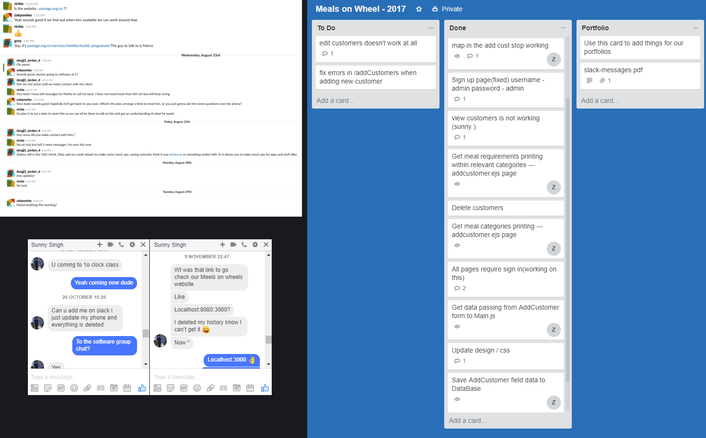

This year in software engineering my group and I had an unconventional start, we were originally assigned the “Buddy Support” mobile application project. We had started initial planning for this and were trying to get into contact with our respondent from the Buddy Support team, Marco, however we didn’t hear back for a couple of weeks and decided to take it to Adon to see how we should proceed. We were then reassigned to the Meals on Wheels project which I had worked on previously so I was going to have to help my group understand the existing code as there was a good amount done in languages that we were unfamiliar with, NodeJS, and Javascript using angular. On the topic of the group being unfamiliar with the project we had a bit of a disagreement between the group as to whether or not we should restart or not in a more familiar language however Sunny and I knew that it would take us far longer than the time available to get it even back to where it is currently. We eventually continued on with the project as is and the majority of us worked on the overall functionality of the page while Jordan worked on the CSS for a new page which ultimately we couldn’t end up implementing into the project.
Although our group didn’t have an ideal start, it was somewhat compounded by our lack of communication. Sunny, Richie Gray and I eventually got together and set up the Trello project and distributed some jobs out to try and get the ball rolling; it was getting increasingly frustrating to get everyone together at once to delegate jobs and was taking too long to get the project underway. Trello ended up being a very important tool for our group as we were able to track who was working on what, the progress they’d made on an individual task, and what still needed to be started. Our main means for communication was Slack, which made it easy for the group to openly communicate as a whole, when people were active; some of us also used Facebook personal messaging to communicate which was another convenient means to stay in touch. Ultimately I think our entire group could work on the communication side since it really is pivotal to doing well and we suffered from a lack of it at the start of the project. Below I have attached some screenshots of the assorted applications we used for communication within our group:
On a more personal level, I would like to improve my knowledge of GIT as I feel like this could not only benefit me greatly, but the groups and peers that I work with. During software engineering I was incredibly slack with GIT, mainly due to a lack of knowledge on the subject but I realise how important this would be for group projects or even version control on individual projects. I’ve been trying to familiarize myself with GIT a lot more in the second term of this semester by just using it more often in general with help from google and stack overflow hen need be, I’ve also been trying to address issues I find rather than finding a work around. I feel I’ve improved significantly over the past month or two but there is still a lot more for me to learn, and then get more efficient with.
Another thing I found myself struggling with was my overall problem solving, I would often find myself trying to jump in too fast without properly understanding what is happening, this was really obvious for me having to worth with Javascript and using JQuery and Anglular frameworks which I had no knowledge of. A couple of times I would be working on a solution and after discussing it with Adon I would realise I hadn’t quite fully understood what I was changing. A prime example of this was the angular ng-repeat method that I tried to rework when I should have been removing it all together.
I will go further in-depth on the tasks I had to complete and how I went about them on the “Tasks” tab, and my essay for Software Engineering 2017 will be printed in the “Essay” tab.